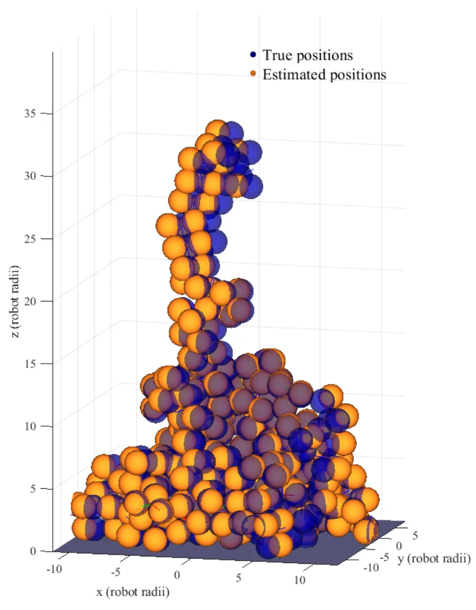
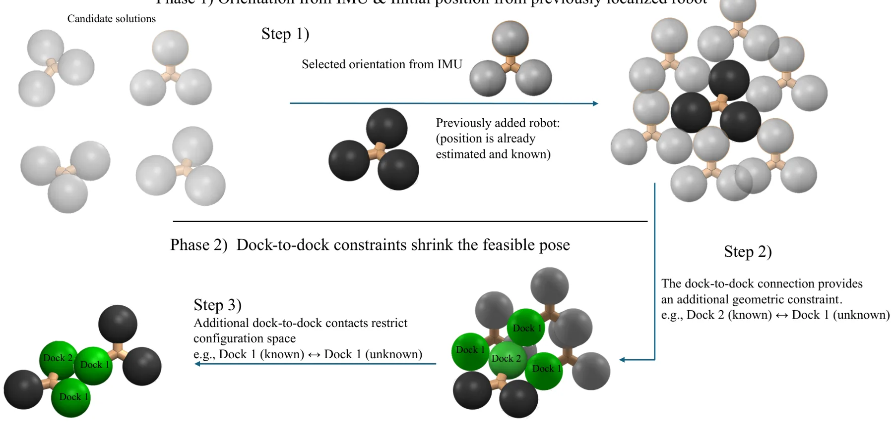
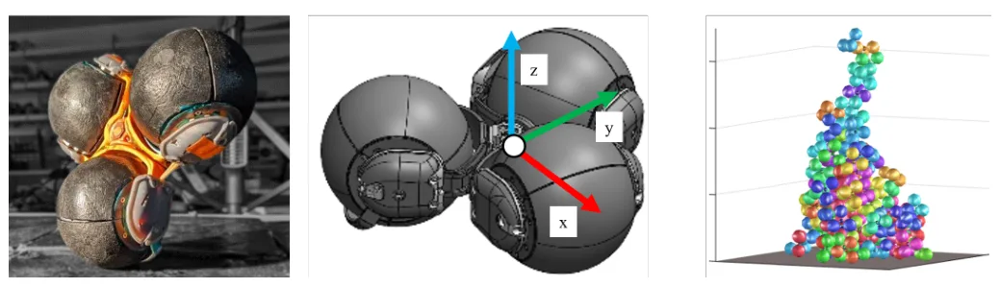
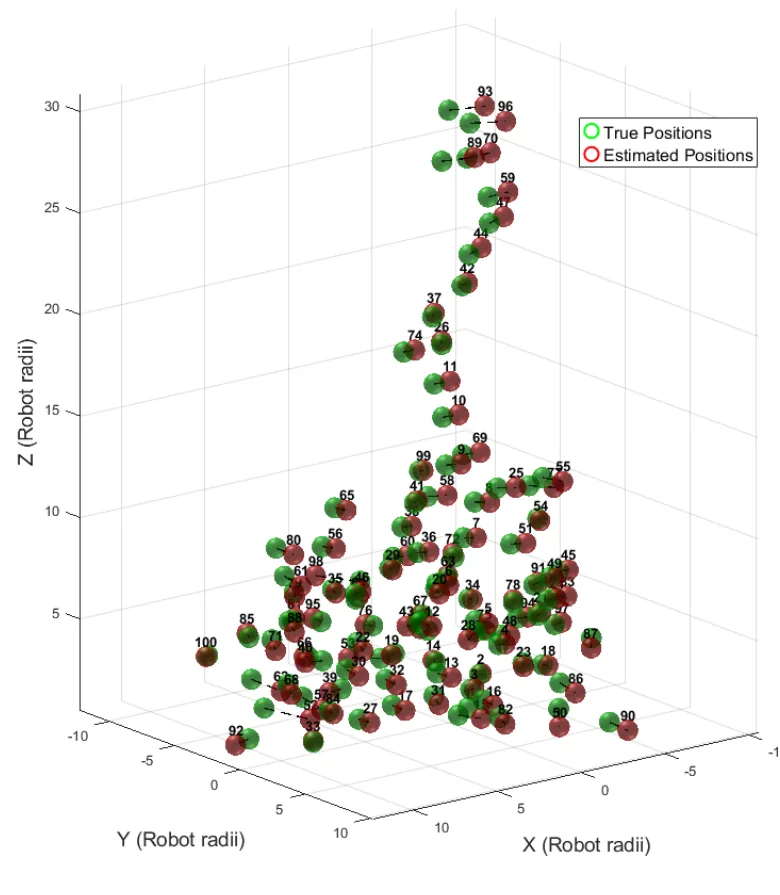
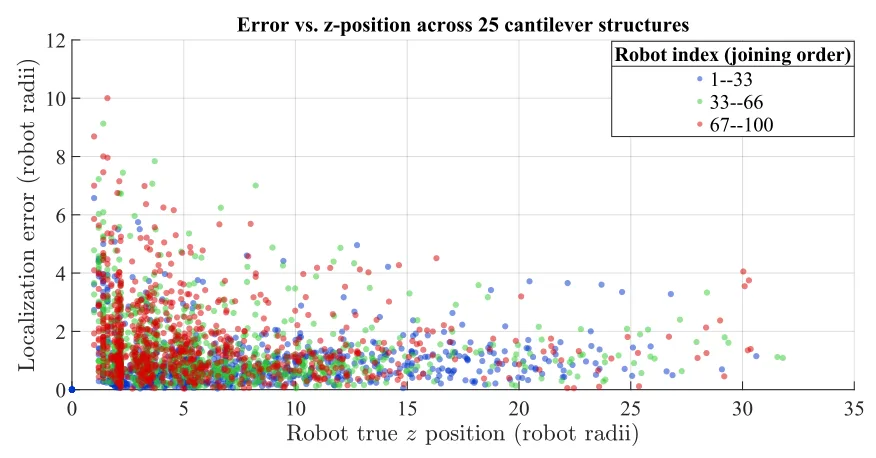
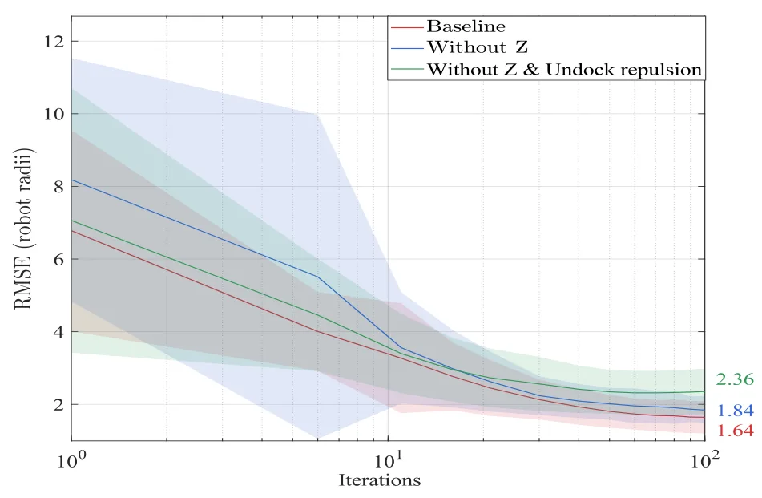
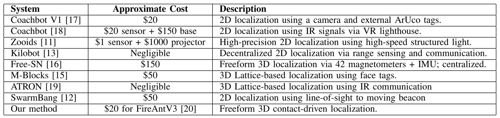
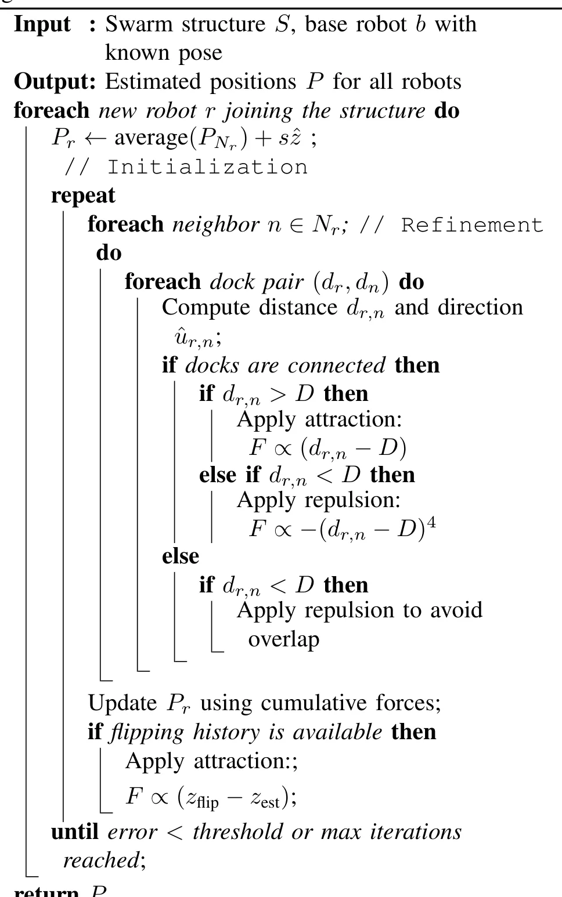
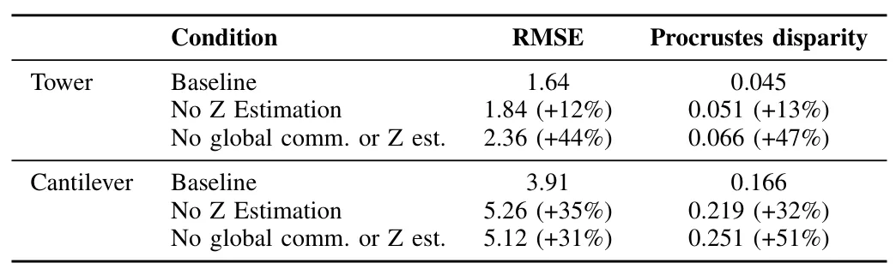

自由形态机器人自组装结构中的接触驱动定位Contact-Driven Localization in a Freeform Robotic Self-Assembled Structure
定位主题直接，强调最小感知和局部通信；但目前证据以仿真为主，且接触图的歧义、尺度与三维姿态可观测性仍需核查。
一句话工作总结
把极弱的二值接触关系转化为相对位姿约束，以虚拟力迭代恢复自组装群体的空间布局。
摘要
面向模块化机器人自组装，论文仅利用机器人之间是否物理连接的二值接触信息进行相对定位，无需外部跟踪设施或高成本传感器。其虚拟力框架让位姿迭代地被已对接邻居吸引、被未连接机器人排斥。塔和悬臂结构的仿真表明，该方法能够在组装过程中恢复相对布局，并支持可扩展的自由形态自组装。
Accurate localization remains a key challenge in swarm robotics, particularly for self-reconfigurable systems that must identify relative positions to form diverse structures. Most existing approaches rely on external tracking infrastructure or high-cost sensors, which limit scalability and deployment in unstructured environments. In this paper, we propose a novel contact-driven localization method for modular robots that leverages only local communication through binary contact information (whether two robots are physically connected or not). To exploit these contact cues, we introduce a virtual-force framework in which robots iteratively refine their poses attracting toward dock-connected neighbors and repelling from non-connected ones. The method requires no external infrastructure and relies only on minimal onboard sensing. Simulations show effective localization during the assembly of towers and cantilevers, enabling accurate, scalable, free-form self-assembly.
中文解读摘录
- 原题：URHead: A Unified UV-Space Representation for Joint Mesh-3DGS Optimization in Head Avatars
- 作者：Seonghak Lee, Junhee Cho, Jisoo Park, Min-Gyu Park, Jongmin Lee, Ju Hong Yoon, Junseok Kwon
- 推荐评分：8.0/10
- 核心方法：让网格与 3D Gaussian Splatting 共享 UV 参数化，通过联合优化和自适应 Gaussian 采样，自动分配可控几何与照片级细节的表达职责。
- 为何值得看：直接回应 hybrid mesh–3DGS 中结构一致性与可控性难兼得的问题；重点核查 UV 拓扑限制、遮挡区域稳定性以及能否推广到通用动态对象。
图表/页面预览
{kind=link}

{kind=link}

{kind=link}

{kind=link}

{kind=link}

{kind=link}

{kind=link}

{kind=link}

{kind=link}
